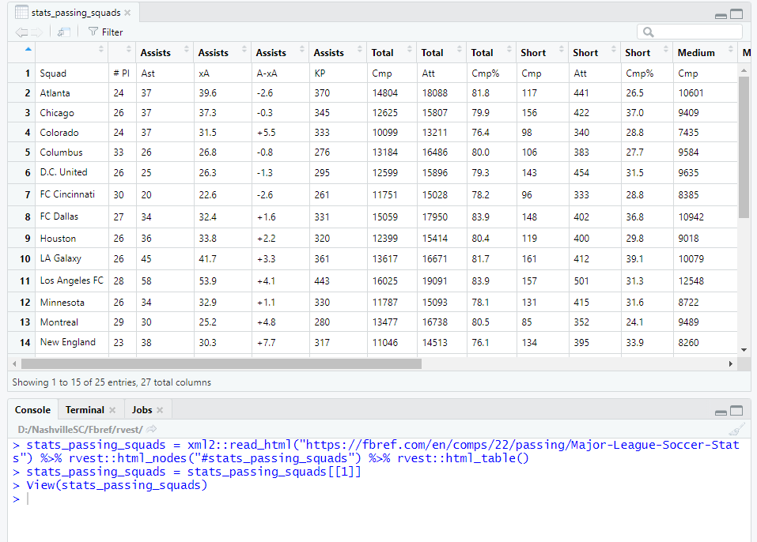

Pre-Match Conference:
- The idea to write this article was always in my mind when I managed to scrap Fbref data for myself.
- But only when I shared this info with my friends who are working in the same field, I realised that a helper was not available online and that they were waiting for someone to do this daunting task.
- This procedure is not only applicable for Fbref or any SRef in that case but also for data in any website which is rendered dynamically.
Or If you just need the code you can travel to Final Code
What we normally used to do ?
The traditional data scraping through rvest() is as follows:-
Grab the page URL and table-id

-
And then (har)rvest it
require("dplyr")
stats_passing_squads = xml2::read_html("https://fbref.com/en/comps/22/passing/Major-League-Soccer-Stats") %>% rvest::html_nodes("#stats_passing_squads") %>% rvest::html_table()
stats_passing_squads = stats_passing_squads[[1]]
What's special with FBref tables and Why just using rvest won't help?
- The site is structured in such a way that all tables except the first (even the 1st sometimes), are rendered dynamically. I managed to capture the way the tables load.
- Notice how the 1st table loads quickly and how the reminder are taking their time to load.
- I have annotated the tableids on the tables for the sake of clarity.
So when we try to scrap such tables, this happens :
What Next? :(
The issue is we can see the tables and their ids in naked eye but can't put it on paper use them in R Studio. So we are going to use RSelenium which helps us in this matter.
- Selenium is an automation tool. RSelenium is a package which helps us to achieve automation in R.
- By using RSelenium, we fool the website as if a browser has walked through the website completely and collected every bit of info on its way. The server will think the selenium driver to be just another human wandering the page.
- In other words, it's similar to copying the contents of whole page and saving it in a word document for future purposes. Get it right? It's as simple as this.
But Before getting started, there is a catch.
We can't just enter the url in a browser and ask "RSelenium" to do its job. We need to install Selenium in our computer, so that RSelenium can communicate with real Selenium. And for that we will use the concept of containers (Docker) rathering than using executables which are tiresome and has different procedure for different OSes.
Hold your breath. All these are steep leaning curves and rather one-time investments.
Getting Started:
- Install Docker for Desktop
-
Install RSelenium in RStudio as follows:
install.packages("RSelenium") - Execute the following code in RStudio's Console unless stated otherwise.
-
Start
Docker for Desktopin your OS. (It really takes time to load. Watch Haaland's goals meanwhile.) -
Run the following code in RStudio's Terminal (not Console):
docker run -d -p 4445:4444 selenium/standalone-chrome
The de facto way of knowing the success status is by runningdocker pson which you will get the container id of selenium as output.
If Terminal is not visible in your panes, then useALT + SHIFT + Rto open it.
-
Remember the anonymous browser that I mentioned earlier? We are about to invoke him now:
remDr <- RSelenium::remoteDriver(remoteServerAddr = "localhost",port = 4445L,browserName = "chrome")
remDr$open()
remDr$navigate("https://fbref.com/en/comps/22/passing/Major-League-Soccer-Stats")
remDr$screenshot(display = TRUE)
Magnifique !
-
The rest of the code involves rvest where we will be dumping the html source code into read_html()
require("dplyr")
stats_passing_squads = xml2::read_html(remDr$getPageSource()[[1]]) %>% rvest::html_nodes("#stats_passing_squads") %>% rvest::html_table()
stats_passing_squads = stats_passing_squads[[1]]
Großartig !
Me - " No not absolutely. Hence comes the most awaited part."
We can create a function to automate all these steps (including running Docker from Console). Here's how I do it.
FBref data at one click of a button
require(RSelenium)
require(dplyr)
# For some unspecified reason we are starting and stopping the docker container initailly.
# Similar to heating the bike's engine before shifting the gears.
system("docker run -d -p 4445:4444 selenium/standalone-chrome")
t = system("docker ps",intern=TRUE)
if(is.na(as.character(strsplit(t[2],split = " ")[[1]][1]))==FALSE)
{
system(paste("docker stop ",as.character(strsplit(t[2],split = " ")[[1]][1]),sep=""))
}
# To avoid starting docker in Terminal
system("docker run -d -p 4445:4444 selenium/standalone-chrome")
Sys.sleep(3)
remDr <- RSelenium::remoteDriver(remoteServerAddr = "localhost", port = 4445L, browserName = "chrome")
# Automating the scraping initiation considering that Page navigation might crash sometimes in
# R Selenuium and we have to start the process again. Good to see that this while() logic
# works perfectly
while (TRUE) {
tryCatch({
#Entering our URL gets the browser to navigate to the page
remDr$open()
remDr$navigate(as.character(url))
}, error = function(e) {
remDr$close()
Sys.sleep(2)
print("slept 2 seconds")
next
}, finally = {
#remDr$screenshot(display = TRUE) #This will take a screenshot and display it in the RStudio viewer
break
})
}
# Scraping required stats
data <- xml2::read_html(remDr$getPageSource()[[1]]) %>%
rvest::html_nodes(id) %>%
rvest::html_table()
data = data[[1]]
remDr$close()
remove(remDr)
# Automating the following steps:
# 1. run "docker ps" in Terminal and get the container ID from the output
# 2. now run "docker stop container_id" e.g. docker stop f59930f56e38
t = system("docker ps",intern=TRUE)
system(paste("docker stop ",as.character(strsplit(t[2],split = " ")[[1]][1]),sep=""))
return(data)
}
All you have to do is start "Docker for Desktop" and call our function in RStudio.
head(bundesliga_players_fbref_shooting)

Post-Match Conference:
Where you can make full use of such automation?
- Building a shiny app which makes something out of fbref data.
- The only catch is you can't run Docker in shinyapps.io . Instead you can host your shiny app in a cloud such as AWS or Azure and then run Docker for Desktop 24 hrs * 365 days or at least until breach your free-tier limit.
Also a shout-out to Eliot McKinley for encouraging me to write this article.
Reference:
Callum Taylor : Using RSelenium and Docker To Webscrape In R - Using The WHO Snake DatabaseApart from borrowing few snippets from the above piece, I did manage to bring in some automation into the procedure to gather data.
If you feel, there is also another way to achieve this, don't hesitate to contact me.
Disclaimer:
Sports Reference LLC says : "Except as specifically provided in this paragraph, you agree not to use or launch any automated system, including without limitation, robots, spiders, offline readers, or like devices, that accesses the Site in a manner which sends more request messages to the Site server in any given period of time than a typical human would normally produce in the same period by using a conventional on-line Web browser to read, view, and submit materials."
- I would like to re-iterate that in this procedure, the time taken to fetch data from any SRef website is same as someone copying it from a browser, because of the way RSelenium works.
-
Also the function to get such data was made to help people who prefer to get the data in click of a button rather than:
- Opening a page
- Scrolling through for a table
- Clicking "Share & More"
- Choosing "Get Table as CSV" and Downloading it.
- And then loading csv file in R
- If you are a Sports Reference official and you would like me to avoid using FBref as an example, kindly message me.